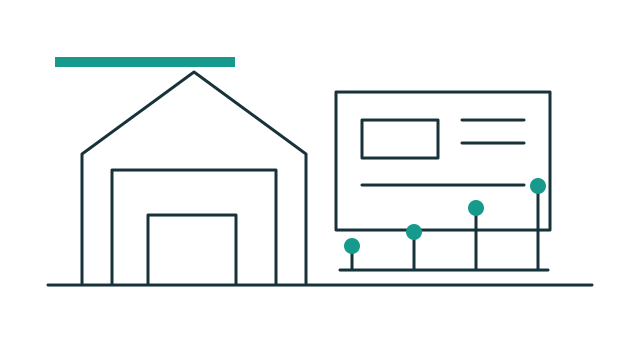

FLOW 01
- ขั้นตอน
- 0
- จุดเชื่อม
- 0
- Schema
- v1
ไม่พบขั้นตอนที่ตรงกับตัวกรอง
ดู Flow แบบข้อความและตาราง
ลำดับขั้นตอน
เงื่อนไขการเชื่อม
| จาก | เงื่อนไข | ไปยัง |
|---|
PROJECT ERP · DOCUMENTATION FOUNDATION
กำลังโหลดคำอธิบาย…

INTERACTIVE MAP
ข้อมูลทุกกล่องและเส้นเชื่อมมาจาก JSON
FLOW 01
| จาก | เงื่อนไข | ไปยัง |
|---|
PRODUCTION DIRECTION
เริ่มจากการประเมินราคา แล้วต่อยอดเป็นโครงการ จัดซื้อ คลัง ผลิต และ MRP
API, Error และ Query มีสัญญาชัดเจน ลดการเดาและลด Bug
Backend ตรวจ Role, Permission และขอบเขต Resource ทุกครั้ง
Revision, Approval และ Audit ทำให้ตามเหตุผลย้อนหลังได้